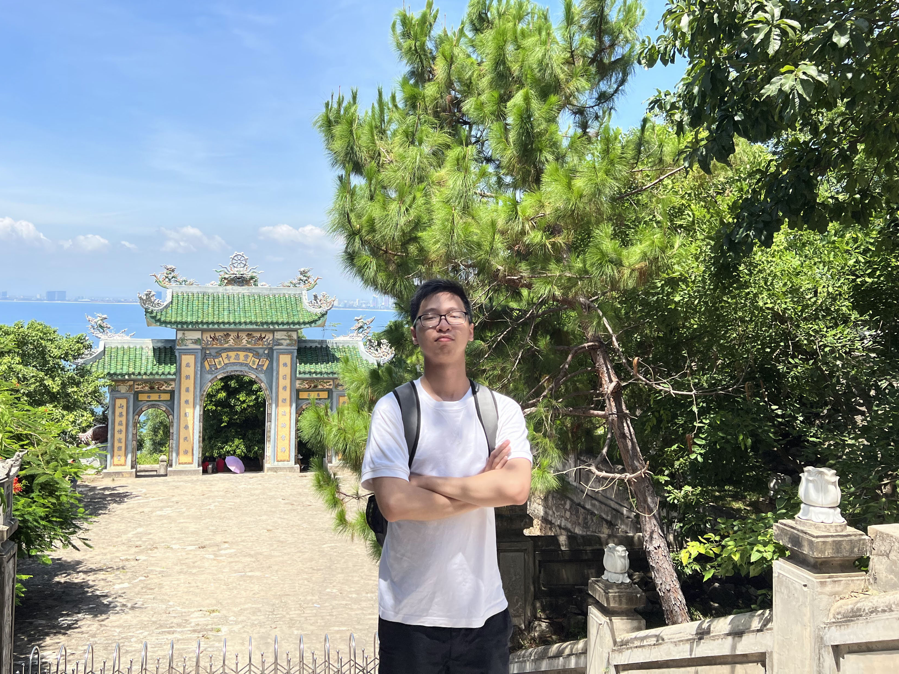

Xin chào
 Tôi là kĩ sư điện có hứng thú với Người Máy, Xử lí Tín hiệu, Lí thuyết Điều khiển và Hệ thống Nhúng. Tôi hoàn thành văn bằng kĩ sư (tài năng) và thạc sĩ (nghiên cứu) về Kĩ thuật Điều khiển & Tự động hóa tại Trường Đại học Bách khoa, Đại học Quốc gia Thành phố Hồ Chí Minh (ĐHBK, ĐHQG-HCM). Tôi từng làm trợ lí nghiên cứu tại VIAM Lab nhằm hiện thực hóa khả năng tự hành cho nhiều loại phương tiện không người lái. Giờ đây, trong vai trò kĩ sư phần mềm tại VinAI, tôi hướng đến thiết kế và cải tiến nhiều phần mềm thông minh cho các phương tiện chạy bằng điện.
Trên trang này có thể tìm thấy xuất bản khoa học của tôi cùng đoạn ghi hình đính kèm.
Đường dẫn:
 GitHub -
GitHub -
 Google Scholar -
Google Scholar -
 LinkedIn
LinkedIn
Liên hệ: qha258@gmail.com
Điểm nhấn dự án
Đồng định đồ trực tiếp dựa trên kết hợp máy ảnh và máy quét khích quang trong môi trường ngoài trời
Đoạn ghi hình này phô diễn hiệu năng của một hệ đồng định đồ trực tiếp, kết hợp thị giác và khích quang, trong đa dạng các môi trường ngoài trời.
Trong hệ thống có đề xuất giải thuật xếp chồng ảnh cải tiến, giải thuật xếp chồng đám mây nhanh và giải thuật tối ưu cửa sổ dựa trên đồ thị nhân tố.
Kết hợp với cấu trúc dữ liệu cây k-chiều gia tăng để quản lí bản đồ, hệ thống đã chứng minh chạy mượt trong nhiều trường hợp khắc nghiệt.
Công trình này là một phần luận văn thạc sĩ của tôi tại ĐHBK, ĐHQG-HCM vào năm 2022.
Mô phỏng bám đường tầm nhìn thẳng và né vật cản tập đứt đoạn cho thuyền không người lái
Đoạn ghi hình này phô diễn cách thuyền không người lái bám đường định sẵn theo vài phương pháp tham số hóa: thẳng hay B-điều.
Bộ dẫn đường của thuyền vì tuân thủ luật tầm nhìn thẳng nên xuất góc đảo lái tham chiếu để bộ điều khiển trượt R-phỏng bám góc.
Để né vật cản, luật tập đứt đoạn được áp dụng, ra quyết định dựa trên phép đo từ máy quét khích quang hai chiều.
Công trình này là một phần hợp tác giữa tôi và VIAM Lab tại ĐHBK, ĐHQG-HCM nhằm hiện thực hóa khả năng tự hành khi quan trắc môi trường cho thuyền không người lái.
Đồng định đồ cho máy quét khích quang hai chiều trong môi trường ngoài trời
Đoạn ghi hình này phô diễn hiệu năng của một hệ đồng định đồ cho máy quét khích quang hai chiều trong cả môi trường nhân tạo và thực tế.
Thông qua tận dụng kĩ thuật đánh trọng số bền vững, tối ưu cửa sổ trượt, đối sánh quét nhanh và tính toán song song,
hệ thống không những vận hành ổn định trong nhiều khu vực hỗn tạp mà còn đáp ứng ràng buộc thời gian thực.
Công trình này là một phần luận văn kĩ sư của tôi tại ĐHBK, ĐHQG-HCM vào năm 2020.
Dẫn đường và điều khiển cho xe điều hướng tự động giao hàng
Đoạn ghi hình này phô diễn cách một xe điều hướng tự động giao hàng nhận lệnh từ giao diện đồ hoạ người dùng giám sát và tự động lăn bánh tới đích đến mong muốn.
Nhằm phục hồi vị trí và góc hướng, xe phụ thuộc vào một bộ định vị vệ tinh toàn cầu đo động thời gian thực và một bộ tham chiếu góc hướng.
Tính năng tự lái sau đó được hiện thực hóa bằng bộ bám đường tầm nhìn thẳng và bộ điều khiển vi tích phân tỉ lệ góc đảo lái.
Công trình này là một phần dự án của tôi trong chương trình Sinh viên Nghiên cứu Khoa học Khoa Điện - Điện tử 2019 tại ĐHBK, ĐHQG-HCM.
Xuất bản khoa học
 IMU-Assisted Direct Visual-Laser Odometry in Challenging Outdoor Environments
(Q.-H. Pham, N.-H. Tran and T.-D. Nguyen),
in International Conference on Green Technology and Sustainable Development, Springer, 2023, pp. 497-508.
IMU-Assisted Direct Visual-Laser Odometry in Challenging Outdoor Environments
(Q.-H. Pham, N.-H. Tran and T.-D. Nguyen),
in International Conference on Green Technology and Sustainable Development, Springer, 2023, pp. 497-508.
 [đường dẫn]
[đường dẫn]
 [tệp tin]
[tệp tin]
 VIAM-USV2000: An Unmanned Surface Vessel with Novel Autonomous Capabilities in Confined Riverine Environments
(N.-H. Tran, Q.-H. Pham, J.-H. Lee and H.-S. Choi),
in Machines, vol. 9, no. 7, p. 133, 2021.
VIAM-USV2000: An Unmanned Surface Vessel with Novel Autonomous Capabilities in Confined Riverine Environments
(N.-H. Tran, Q.-H. Pham, J.-H. Lee and H.-S. Choi),
in Machines, vol. 9, no. 7, p. 133, 2021.
[đường dẫn]
[tệp tin]
 Online Robust Sliding-Windowed LiDAR SLAM in Natural Environments
(Q.-H. Pham, N.-H. Tran, T.-T. Nguyen and T.-P. Tran),
in 2021 International Symposium on Electrical and Electronics Engineering (ISEE), Ho Chi Minh City, 2021.
Online Robust Sliding-Windowed LiDAR SLAM in Natural Environments
(Q.-H. Pham, N.-H. Tran, T.-T. Nguyen and T.-P. Tran),
in 2021 International Symposium on Electrical and Electronics Engineering (ISEE), Ho Chi Minh City, 2021.
[đường dẫn]
[tệp tin]
 Implementation and Enhancement of Set-Based Guidance by Velocity Obstacle along with LiDAR for Unmanned Surface Vehicles
(N.-H. Tran, M.-H. Vu, T.-C. Nguyen, M.-T. Phan and Q.-H. Pham),
in 2020 5th International Conference on Green Technology and Sustainable Development (GTSD), Ho Chi Minh City, 2020.
Implementation and Enhancement of Set-Based Guidance by Velocity Obstacle along with LiDAR for Unmanned Surface Vehicles
(N.-H. Tran, M.-H. Vu, T.-C. Nguyen, M.-T. Phan and Q.-H. Pham),
in 2020 5th International Conference on Green Technology and Sustainable Development (GTSD), Ho Chi Minh City, 2020.
[đường dẫn]